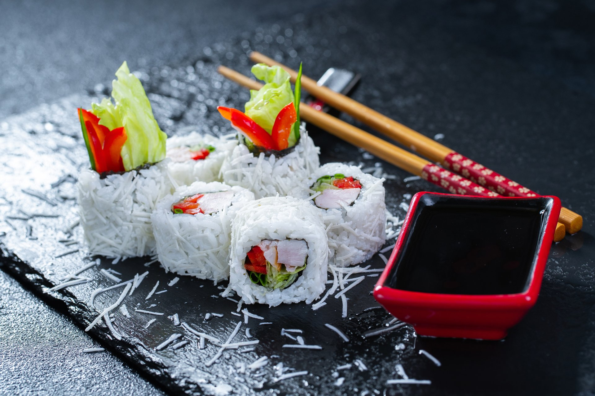

Sushi je japansko jelo koje
se sastoji od posebno pripremljene riže i obično neke vrste ribe ili morskih plodova, često sirovih, ali
ponekad i kuhanih. I iako biste mogli automatski povezati riječ suši sa sirovom ribom, zapravo je riža
najvažniji sastojak. Zaista, riječ "suši" odnosi se na kiselkast okus octene riže. Bez obzira na dodatke ili
punjenja, suši uvijek uključuje pirinač. Zapravo, riža za suši je toliko važna da suši kuhari u Japanu
prolaze godine obuke samo kako bi naučili kako pravilno kuhati pirinač, prije nego što počnu da rukuju ribom
ili morskim plodovima.
Većina ljudi izvan Japana automatski povezuje sirovu ribu sa sushijem jer većina japanskih restorana
poslužuje sirova jela od morskih plodova poput sashimija, ali postoji mnogo različitih vrsta sushija koji
uključuju predmete poput mesa rakova, hobotnice, jegulje, lignji, morskog ježa itd. Najkvalitetnija i
najsvježija riba obično je rezervirana za sushi i sashimi. Ovi komadi ribe obično se
prodaju kao ribe "sushi grade" i mogu se kupiti lokalno u većini gradova ili naručiti putem interneta.
Pirinač za suši je bijeli pirinač srednjeg zrna pripremljen sa sirćetom i drugim začinima kao što su so i
šećer. Uobičajena sorta riže koja se koristi za suši je Japonica;
posebno, sorta Koshihikari. Japonica je
pirinač srednjeg zrna sa donekle zaobljenim zrnima, što ga čini primetno drugačijim od mršavijeg, dugozrnog
pirinča na koji smo navikli na Zapadu, a koji je poznat kao indica pirinač. Japonica pirinač je škrobna, sa
višim nivoima skroba koji se zove amilopektin od indica pirinča. Ovaj dodatni škrob uzrokuje da se kuha prilično
ljepljivo, što ga čini lakšim za jelo štapićima, a idealan je za oblikovanje zajedno kako biste napravili suši.


Nigiri suši se sastoji od gomile pirinča ovalnog oblika
sa kriškom ribe ili morskih plodova na vrhu. Riba
ili morski plodovi su obično sirovi, ali ponekad su fermentirani i povremeno, kao što su jegulja ili škampi,
kuhani. Riječ nigiri na japanskom se otprilike prevodi kao "hvatanje" na engleskom. Tako se japanska riječ
nigiri-zushi otprilike prevodi kao "ručno prešani" suši. Poenta je u tome da se kod nigiri sušija pirinač
oblikuje ručno, a riba ili drugi preliv rukom pritiska na pirinač. Ponekad će kuhar ubaciti malo vasabija između
ribe i riže. Ljepljivost riže, zajedno sa vlagom iz preljeva, pomaže da se traka sirove ribe zalijepi za hrpu
riže ispod. Tipični primjeri sirove ribe na nigiri sušiju su tunjevina, losos i žutorep. Masna tuna, koja dolazi
iz trbušnog dijela plavoperajne tune, je još jedan popularan preljev. Ukrasi uključuju mljeveni mladi luk ili
đumbir. Zanimljivo, uprkos tome što ste vjerovatno navikli da ga jedete, nigiri suši je namijenjen da se jede
ručno, a ne štapićima. I dok je umakanje sušija u soja sos prihvatljivo, ispravan način da se to uradi je da se
okrene tako da riblja strana ide u soja sos, a ne pirinač. Ostavljanje zrna pirinča u soja sosu smatra se
velikom greškom.


Maki sushi je vrsta sušija u kojoj se pirinač i riba
uvaljaju u list morske alge zvan nori.
Postoji nekoliko glavnih vrsta makija. Maki-zushi je u obliku cilindra, koji se sastoji od lista sušene morske
alge zvane nori umotane oko sloja pirinča i nadjeva, koji mogu uključivati sastojke kao što su sirova riba,
kuhane školjke, povrće, pa čak i krem sir. Umotani cilindar ili cijev se zatim reže na pojedinačne dijelove
veličine zalogaja. Ponekad je rolna napravljena iznutra prema van, što je poznato kao ura-maki, ili
doslovno,
rolanje iznutra prema van. Uz ura-maki, pirinač je izvana, a alge i nadjevi su iznutra. Kao nigiri, i maki je
najbolje jesti ručno. Maki-zushi se dalje klasificira na tanke rolnice, ili hoso-maki, i debele rolnice,
ili
futo-maki. Postoji čak i varijanta makija koja se zove gunkan-maki, koja je takođe poznata kao
"rolnice bojnih
brodova" jer su oblikovane pomalo kao bojni brodovi. Oni su neka vrsta križanja između nigirija i makija, po
tome što postoji baza od riže oblikovana ručno, a zatim traka norija ide oko toga, koja čini neku vrstu posude
za držanje preljeva koji neće ostati na njoj. sami, kao što su riblja ikra, sitno iseckana sirova riba ili
povrće poput zrna slatkog kukuruza u prelivu od majoneze.


Uni (oo-nee) je japanski naziv za jestivi dio morskog
ježa. Iako se kolokvijalno naziva ikra (jaja), uni
sushi su zapravo spolne žlijezde životinje (koje proizvode mlijeko ili ikru). Uni je u rasponu boja od bogate
zlatne do svijetložute i ima kremastu konzistenciju koju neki vole, a drugima je neugodna. Ipak je riječ o
jednom sushi artiklu koji ima nevjerojatnu potražnju diljem svijeta, što se odražava i na njegovu cijenu. Morski
ježinci su rijetka poslastica za one koji steknu okus. Uni sushi je laganog, slatkog i pomalo slanog okusa i
obično se uživa kao nigiri sushi ili sashimi. Svaki morski jež sadrži pet 'režnjeva', a berba uni je vrlo
delikatan proces jer se meso lako raspada. Uni je donekle sezonski proizvod i najbolji je kada se poslužuje od
kasne jeseni do zime, a decembar se smatra najboljim mjesecom prema japanskim standardima.


Temaki, ili ručne rolnice, koje, umjesto da se nori čvrsto umotaju oko riže i punjenja, nori
se labavo motaju u obliku korneta, sa nadjevima unutra, kao veliki kornet za sladoled. Temaki suši se ponekad
naziva i "ručna rolada" jer je napravljen od umotanog korneta morskih algi, omotanih oko pirinča i punjenja.
Najbolji dio, je to što je ovo obrok u kojem svako sam sebi pomaže. Samo treba da pripremite tanjir pirinča za
suši, nori (list od morskih algi) i punjenja kao što su riba sašimi i narezano povrće/mango. Zatim za stolom
svaka osoba pravi ručno rolani suši na osnovu svoje omiljene mešavine sastojaka.